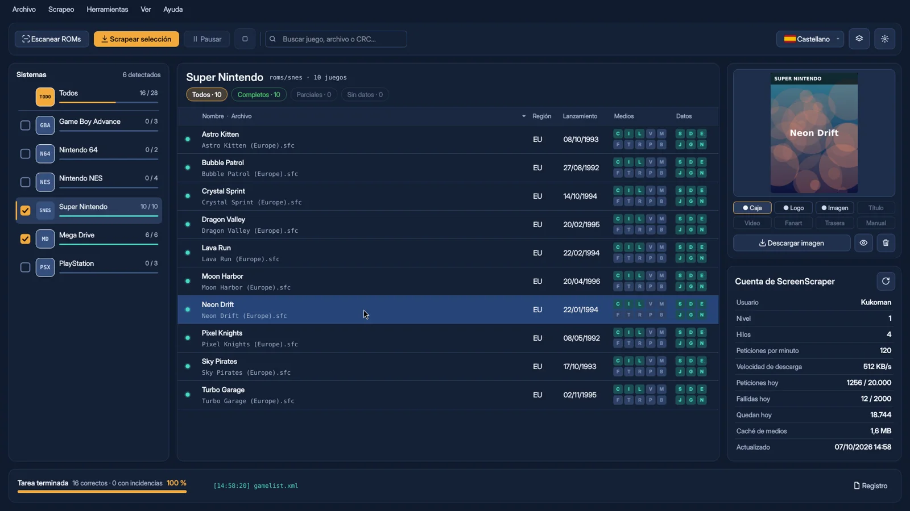
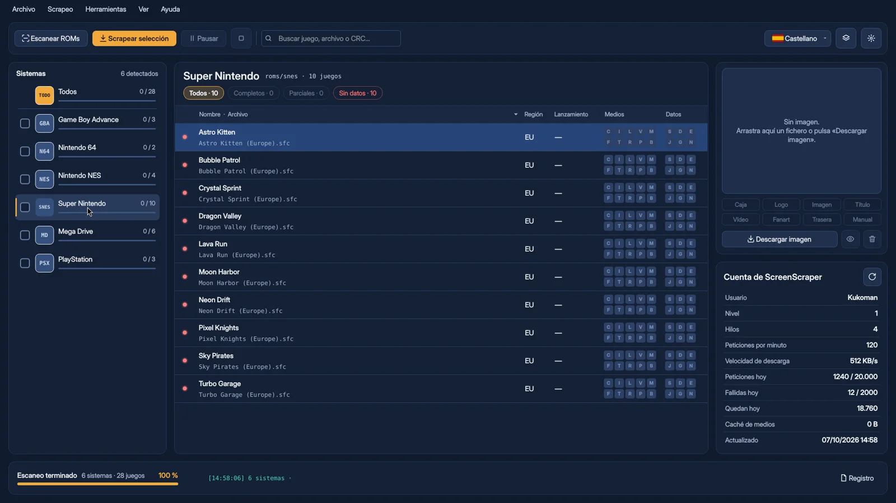

Reconoce tu colección
Detecta los 256 sistemas de Batocera por el nombre de sus carpetas, en tu equipo o en red. Agrupa los juegos de varios discos y aparta las BIOS.
InicioFunciones
Funciones
Pensado para colecciones grandes y para quien no quiere pelearse con ficheros XML.
Detecta los 256 sistemas de Batocera por el nombre de sus carpetas, en tu equipo o en red. Agrupa los juegos de varios discos y aparta las BIOS.
Calcula la huella de cada ROM (CRC32, MD5 y SHA1) para que ScreenScraper la identifique sin dudas, aunque el fichero tenga un nombre raro.
Tú decides el orden: España, Europa, Mundial… Las carátulas, los nombres y las fechas salen de tu región preferida, y la sinopsis en tu idioma.
Todo se guarda en una carpeta de salida aparte. Al copiarla a Batocera se respetan tus partidas jugadas y tus favoritos.
Un editor visual para diseñar la imagen de cada juego: captura, caja 3D, logo y textos, con capas, guías y deshacer.
Carátula, galería, vídeo integrado y todos sus datos. Edítalos a mano o vuelve a buscarlos comparando lo nuevo con lo que ya tienes.
Encuentra juegos sin ROM, imágenes que faltan y ficheros que nadie usa. Nada se borra: lo que sobra se aparta en una carpeta.
Guarda las versiones anteriores de cada gamelist. Vuelve a cualquiera, o al original de Batocera, con un clic.
Respeta los límites de tu cuenta y te avisa antes de un scrapeo grande si no te va a llegar la cuota del día.
Avisa cuando hay una versión nueva, te enseña sus novedades y se instala con un clic. Si algo falla, vuelve solo a la versión anterior.
Cada sistema con sus propias regiones, medios y plantilla de mix: en arcade, captura y marquesina; en Super Nintendo, caja 3D y Europa primero.
Elige qué juegos scrapear según lo que les falta: sin datos, incompletos o sin una imagen o un dato concreto. Antes de empezar te dice cuántos son, para no gastar cuota de ScreenScraper en lo que ya está bien.
Antes y después


AntesDespuésArrastra el control para comparar. Juegos de demostración.
Es gratis, no se instala y funciona en Windows y Linux.